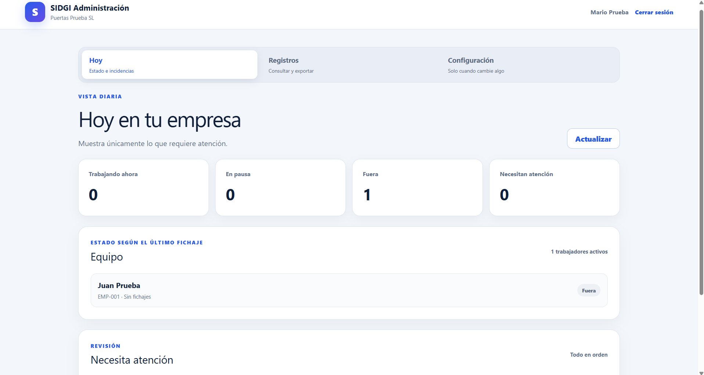
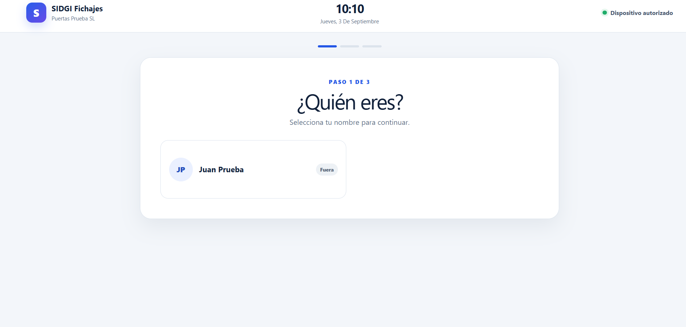
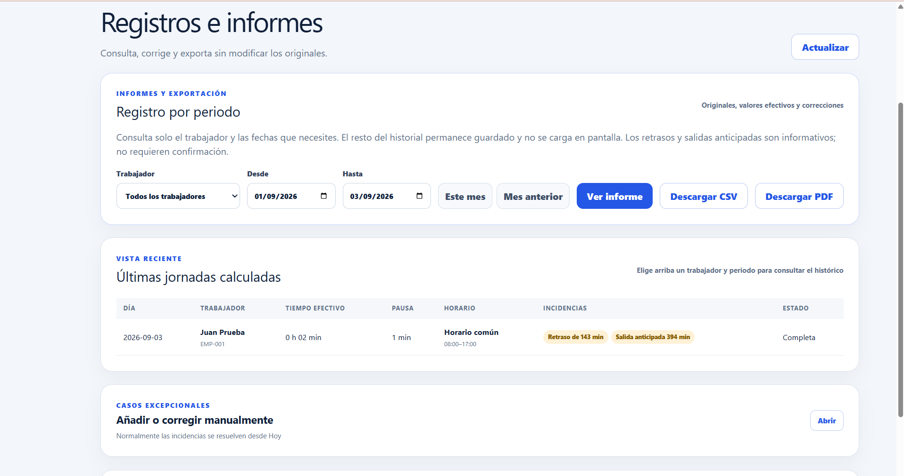

Registros centralizados para revisar las horas de cada trabajador y preparar los informes del periodo.
Puertas Lloris Pons · Control horario
Preparamos e instalamos el sistema que tu empresa necesita: control horario desde tablet, gestión de bonos y clientes, o automatización de tareas repetitivas.
Instalación presencial en Valencia y configuración remota para empresas de toda España.


¿Aún apuntáis las horas en papel, Excel o WhatsApp?
Controla clientes, sesiones e importes y, si tu negocio lo necesita, permite reservar cita online.
Para tareas administrativas que repites cada semana.
Preparamos tu solución, te la instalamos y te la dejamos funcionando.
Una conversación breve para entender cómo trabajas.
El sistema se ajusta a tu negocio, no al revés.
Te la dejamos lista y te enseñamos a usarla.
Desde el primer día, con nuestro soporte cuando lo necesites.

Pantallas del producto actual con datos ficticios.
Cuatro negocios ya han sustituido el control manual por un sistema sencillo de fichajes.
Registros centralizados para revisar las horas de cada trabajador y preparar los informes del periodo.
Puertas Lloris Pons · Control horario
Registros de entrada y salida ordenados y disponibles en el momento.
Alumida · Control horario
Una tablet en el centro de trabajo y acceso rápido del responsable a todos los registros.
Oleohidráulica Levantina · Control horario
Control horario sencillo para trabajadores y responsable, sin cambiar la forma de trabajar del negocio.
Joaquín Sánchez · Control horario
Explícanos cómo trabajas y prepararemos una solución a tu medida.